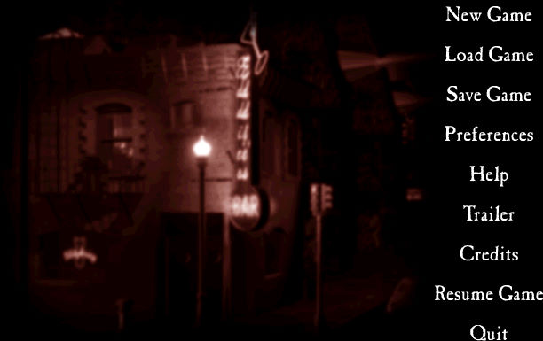
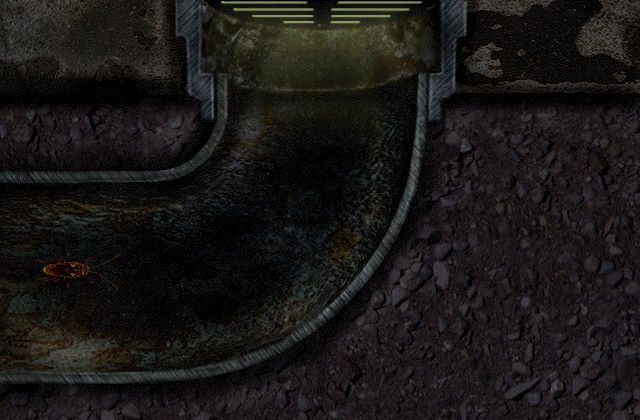

名稱：壞蟑螂／惡咒 (Bad Mojo: The Roach Game，英文版)
簡介：Pulse 1996年出品的冒險解謎遊戲，由Acclaim代理發行。台灣由英特衛代理進口，但
並未中文化。2004年由Got Game推出「重製版（Redux）」 [待補]。


保護：光碟
限制：原始版遊戲程式為16位元，只能在Win31/9x/XP系統上執行。重製版無此限制。
限制：安裝或執行前，都要先設定螢幕顯示模式為256色。重製版無此限制。
備註：遊戲需要安裝QuickTime。
操作：
1.啟動遊戲後若遲遲未出現主畫面，請連續按Esc鍵。
2.實際遊戲過程不使用滑鼠，請用鍵盤操控